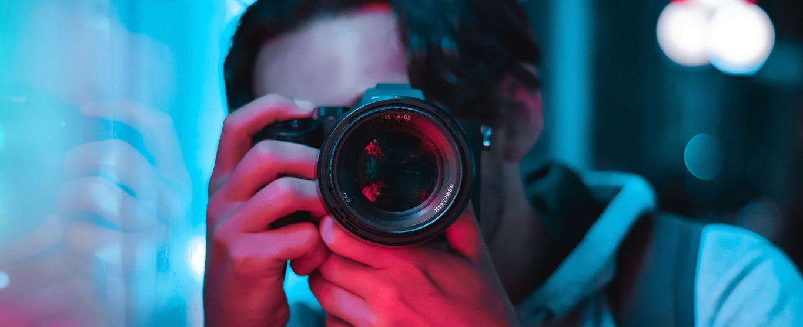
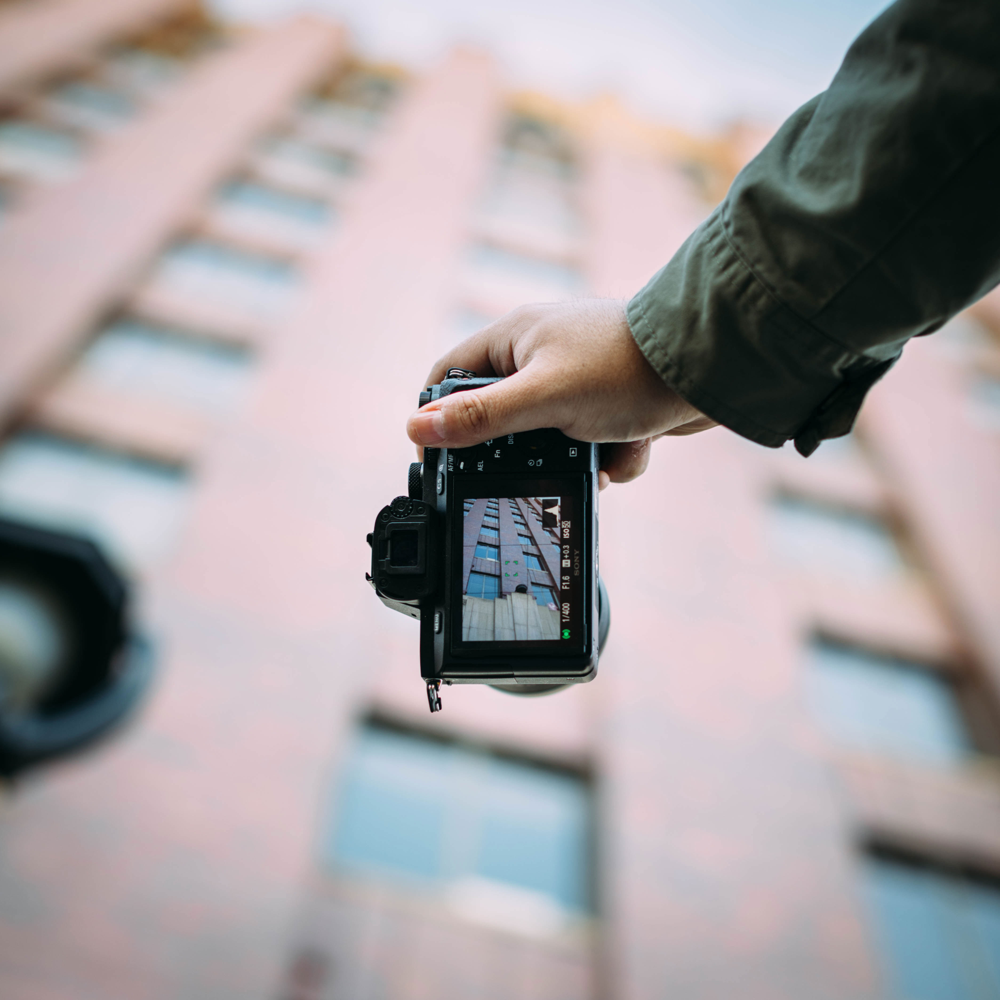
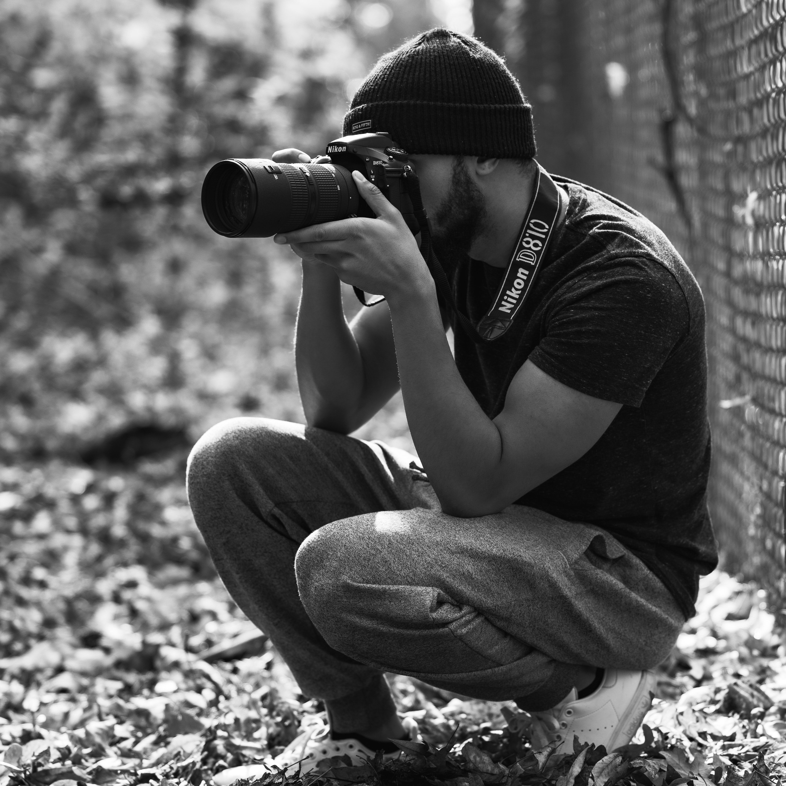

Bienvenidos a mi página

"Capturando momentos"
"Transformo tus ideas en realidad a través de la fotografía y la edición de video de alta calidad."
Lo que hago
Trabajo con programas de edición de video, como Adobe Premiere Pro y Final Cut Pro. También realizo arte digital y post producción.

Momentos únicos
Me dedico a la edición de video para publicidad y sociales. Me gusta capturar los momentos únicos y contar historias enimágenes.

Experiencia
Soy un fotógrafo, artista y editor de video con más de 10 años de experiencia en el rubro. Me especializo en retratos, eventos y paisajes.